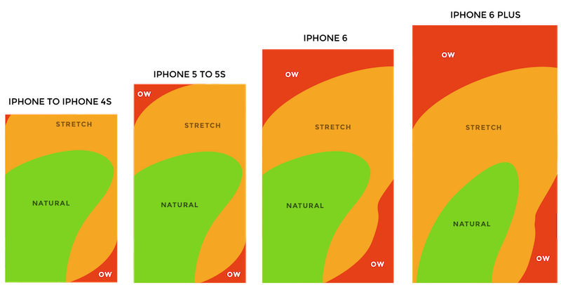

Mobile Design Best Practices
- One Screen, One Task: Reduce the effort users have to put in to get what the want
- Invisible User Interface: Content becomes an interface
- Breathing Space: Use negative space to draw attention to important content
- Navigation Made Simple: Make navigation self-evident
- One Hand Operation: Adapt your design to the bigger screens
- Make App Appear Fast: Don’t make users wait for content
